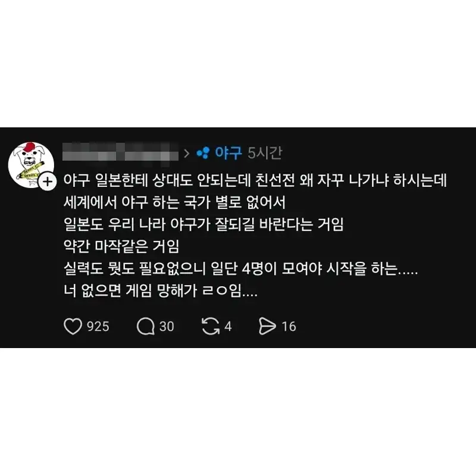

일본이 우리랑 야구 해주는 이유
댓글
10년전 기준으로 AA급 정도는 쳐줬는데 요즘은 AAA급 조금 있는 AA급이긴 할듯
미국, 일본 >>>>>>>> 중남미국가들 > 캐나다 > 한국 = 대만 = 호주 >> 그 외
뭐 요정도? 야구가 투수놀음임
그동안 우리가 금메달도 따고 국제대회 성적을 낼 수 있었던건
류현진, 김광현, 오승환, 등등 좋은 투수들이 있었기 때문임 (더 옛날에는 박찬호, 서재응, 구대성 등등)
지금은 투수가 너무 후짐 그냥 막아낼 수 없다고 보면됨
투수가 약하면 타격도 약해짐 왜냐면 국내리그에서 맨날 약한 투수만 상대하니까
국제 경쟁력 올리려면 좋은 투수들을 많이 키워내야됨
그래서 하현승에 기대하는게 큰거임
하현승만 잘해도 일본 잡음
너만오면고
세계대회 꼭 해야 됨. 일본 내수만 해도 잘 되잖아.
할사람 없어서 그런다는 비유는 좀..
그냥 연봉순으로
미국 일본 중남미 한국 대만 호주순임
유럽서 가끔순위높은건 메이저선수들있어서고